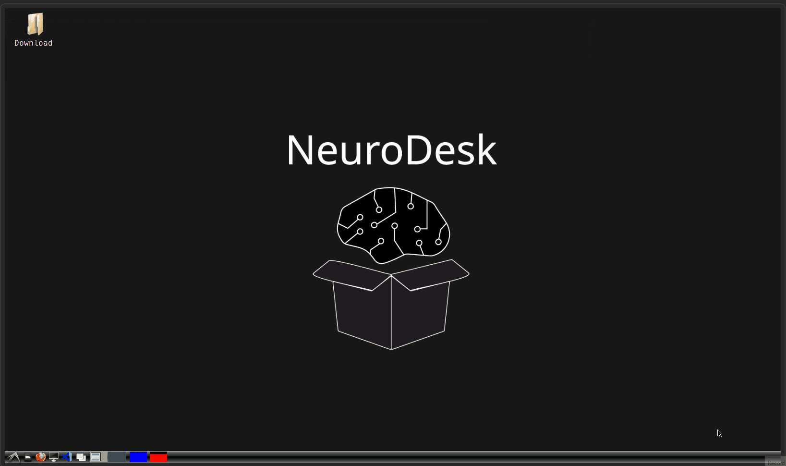
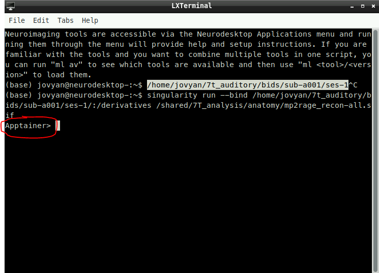

7T anatomical analysis on neurodesk
Basics
After converting the data from DICOMS to niftis (BIDS format) you will notice that unlike 3T data, you might have collected 3 different anatomical scans:
- INV1 (1st inversion)
- INV2 (2nd inversion)
- UNI (MP2RAGE)
The files we really care about for the anatomical analysis are INV2 and UNI (MP2RAGE)
When opening an MP2RAGE scan it is clear that there is a lot of noise that we do not get at 3T.
This means that we first need to get rid of this noise before using recon-all (recon-all will fail if trying to pass it these noisy images).
- This means there are a few extra pieces of software that is needed to be able to run the anatomical analysis
What software is needed for 7T anatomical analysis?
- Presurfer (uses MATLAB/ SPM12)
- CAT12
- FreeSurfer (to use recon-all)
Neurodesk and containers
Containers are explained in more detail here.
Put simply, currently on neurodesk we cannot load 2 or 3 pieces of software at once and this means that the anatomical analysis of 7T data is a bit tricky.
Luckily Denis Chaimow (link to github) has created a container in which we can run the analysis.
The container and scripts I edited to allow the use of processing anatomical results for a single subject with multiple sessions
How to run the script?
- The script should be located in
/shared/7T_analysis/anatomy
- Open a terminal:

- Start the container
- The container can be started like so:
singularity run --bind /path/to/output:/derivatives /shared/7T_analysis/anatomy/mp2rage_recon-all.sif
- Here we need to make sure that the
/path/to/outputis exactly where our data is stored.
For example:
- Here my anatomical data folder is stored in
/home/jovyan/7t_auditory/bids/sub-a001/ses-1
- This means that I want to mount this folder to the container so my command will be like so:
singularity run --bind /home/jovyan/7t_auditory/bids/sub-a001/ses-1/:/derivatives /shared/7T_analysis/anatomy/mp2rage_recon-all.sif
This then means that once in side the container the path to my data is now mounted to a folder called
/derivativePut simply I create a link from my local folder
/home/jovyan/7t_auditory/bids/sub-a001/ses-1/to a folder inside the container called/derivatives
- Once inside the container
- To know if you are in the container or not you will see the following:

- This means that we are in our own environment and that we can run the command necessary to start the anatomical preprocessing
- Export FreeSurfer subjects directory
- This command should be the same for everyone
export $SUBJECTS_DIR=/derivatives/mprage_recon-all/freesurfer
- Run the script
- We need to now start the preprocessing script
Remember that we have mounted a folder to this folder:
/derivativesThis means that everything you see inside of your local directory e.g.
/home/jovyan/7t_auditory/bids/sub-a001/ses-1/is mirrored inside the container
- Therefore, we can run the script like so:
mp2rage_recon-all.py --inv2 /derivatives/anat/inv2.nii --uni /derivatives/anat/uni.nii
- The script will now start and run everything needed to run the anatomical analysis
If you have multiple sessions you need to make sure that all anatomical scans sessions are inside just 1 folder
You can then run the command:
mp2rage_recon-all.py --inv2 /derivatives/anat/inv2_session1.nii /derivatives/anat/inv2_session2.nii --uni /derivatives/anat/uni_session1.nii /derivatives/anat/uni_session2.nii
Troubleshooting
- The files might need to be unzipped first. This is becuase the script uses SPM12 and that this is only able to read files that end in
.niiand not.nii.gz
Run the commands in a new terminal window:
ml freesurfer
mri_convert /path/to/file.nii.gz /path/to/file.nii